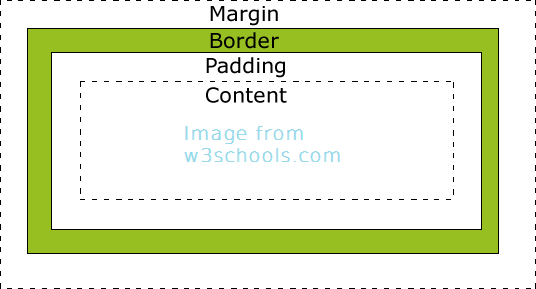

Week 3
Margins Padding and Borders
9/22/2015
Margin, border, and padding are some of the most fundamental parts of css when it comes to positioning elements on your web page, So here is a quick introduction followed by a couple tricks that you may not yet have learned. In the simplest terms, border is the outline of the rectangle that is your element, margin is the extra distance outside of the border, and padding is the distance from the border to the content. I think this picture sums it up very nicely.
So, lets start with a few tips for using margin. To center an element horizontally, define a width and set the left and right margins to auto.
CSS
Section {
width: 300px;
margin: 0 auto;
}
Also, vertical margins will collapse upon each other rather than add together. The distance of elements that are stacked on top of each other will be the greater of the margins for those elements, rather than the total distance of both element's margins. For example:
HTML
<h1>Big Words</h1>
<p>superfluous polysyllabic words including three monosyllabic words<p>
CSS
h1 {
margin: 20px 0;
}
p {
margin-top: 30px;
}
In this scenario, h1 has a bottom margin of 20px, and p has a top margin of 30px, so one would expect the total distance between h1 and p would be 50px. However, the distance will actually be the greater of the two, so the total distance will be 30px. But, if you add a border the total distance will add instead, making the total distance 50px.
Now lets get a few tips for padding. The size of an element when using padding is equal to the width or height plus the padding, rather than the just the assigned width or height. For example:
CSS
div {
width: 100px;
padding: 20px;
}
On might expect the total width of the box to be 100px, since it was assigned a width of 100px. However, the actual width of the box will be 140px (100px + 20px + 20px). You may choose to change this using:
CSS
div {
width: 100px;
padding: 20px;
box-sizing: border-box;
}
This will make the total width equal to 100px with 20px padding between the content and border.
Also, borders are cool... Okay, since borders are very straight forward I will include a special bonus tip instead. If you would like to have an element that changes when the mouse hovers over it try this:
CSS
div {
border: 1px solid black;
transition: 0.5s;
}
div:hover {
border: 1px solid red;
transition: 0.5s;
}
This will make it so that when you hover your mouse over a div its border will turn red instead of black, and back to black when your done hovering. The transition will also make this shift gradual over a certain time rather than instant. Well, hopefully you learned something new by reading this. Hope you all are having fun at DBC!